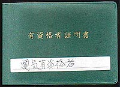

<!DOCTYPE HTML PUBLIC "-//W3C//DTD HTML 4.01 Transitional//EN">
<HTML>
<HEAD>
<META http-equiv="Content-Type" content="text/html>
<META http-equiv="Content-Style-Type" content="text/css" media="all">
<TITLE>みいけ展示室</TITLE>
</HEAD>
<BODY>
<BLOCKQUOTE>
<TABLE>
  <TBODY>
    <TR>
      <TD width="516">
      <P class="MsoNormal" style="text-indent:71.65pt;mso-char-indent-count:4.92"><B style="mso-bidi-font-weight:normal"><FONT color="red" size="+1">展示品</FONT><SPAN lang="EN-US" style="font-size:16.0pt;
mso-font-width:90%"></SPAN></B><BR>
      </P>
      <TABLE>
        <TBODY>
          <TR>
            <TD width="91"></TD>
            <TD width="404">　　　<B>有資格者証明書</B><P>
            　　　　 （提供　Ｓさん）
            </TD>
          </TR>
        </TBODY>
      </TABLE>
      <p class=MsoNormal style='text-indent:11.0pt;mso-char-indent-count:1.0;
line-height:17.0pt;mso-line-height-rule:exactly'><FONT face="MS UI Gothic">　昭和52年11月15日福岡鉱山保安監督局
発行。就業鉱山名「三池炭鉱四山鉱」。就業作業名「石炭鉱山保安規則第38条第1項第2号」。鉱業権者「三井石炭鉱業株式会社」。
教育内容は「配電一般に関すること」「電気工事材料、電気機器一般及電気鉄道を設けた鉱山における電気鉄道に関すること」
「電気工事施工法に関すること」「電気工作物の試験方法及修理方法に関すること」「配電線図に関すること」「関係法令に関すること」
とあり、注意事項として「有資格者は、当該作業を行なっているときは、常にこの証明書を携帯すること」とある。
<spanlang=EN-US style='font-size:11.0pt'></span><BR>
</FONT></p>
<p>

<!--写真1-->
<center></center>
<p class="MsoPlainText" align="center"><font size="2"></font><span lang="EN-US"></o:p>
<p>
<span style="font-family:&quot;ＭＳ ゴシック&quot;;mso-hansi-font-family:
&quot;Courier New&quot;">　Ｓさんが持つその他「有資格者証明書」には、昭和56年3月13日取得のアセチレンガス溶接（石炭鉱山
保安規則第38条第1項第7号）および電気機関車運転（石炭鉱山保安規則第38条第1項第4号）、平成7年2月17日取得の坑内電池自動車
運転（石炭鉱山保安規則第38条第1項第5号の3）がある。<BR>
　「これらは鉱員の資格で、フォークリフトや玉掛けなどの作業と同じく、危険な作業に就くには当該資格が必要だった」（Ｓさん談）。<BR>
　なお、坑内電池自動車とは「三池炭鉱閉山前の平成6年頃、三川鉱350メートル坑道から520メートル坑道への連絡斜坑を運転していた
人車が廃止され、ここを利用する保安要員4,5名のために、速度5kmの電池式自動車が配置された」という。
</span>

<p>

<!--写真2-->
<center></center>
<p class="MsoPlainText" align="center"><font size="2"></font><span lang="EN-US"></o:p>
<p>
<span style="font-family:&quot;ＭＳ ゴシック&quot;;mso-hansi-font-family:
&quot;Courier New&quot;">　石炭鉱山は法律により、坑内空気中のメタンガスの量が多い炭鉱を「甲種」、少ない炭鉱を「乙種」
と分類していた。三池炭鉱は甲種。したがって、三池炭鉱で坑内保安技術職員（いわゆる「職員」）になるためには「甲種坑内保安
係員」の国家試験合格が条件だった。さらに坑内全般の保安担当に就くためには、「甲種電気保安係員」「機械保安係員」の国家試験
合格を必要とし取得。（Ｓさん談）<BR>
　また、閉山の噂が出始めた頃には、炭鉱だけではなくトンネルや火薬庫でも通用する「甲種火薬類取扱保安責任者」の資格を取得も
したが、Ｓさんは結局色々な理由から職員になることを希望せず鉱員で終えたという。
</span>

      </TD>
    </TR>
  </TBODY>
</TABLE>
</BLOCKQUOTE>

</BODY>
</HTML>